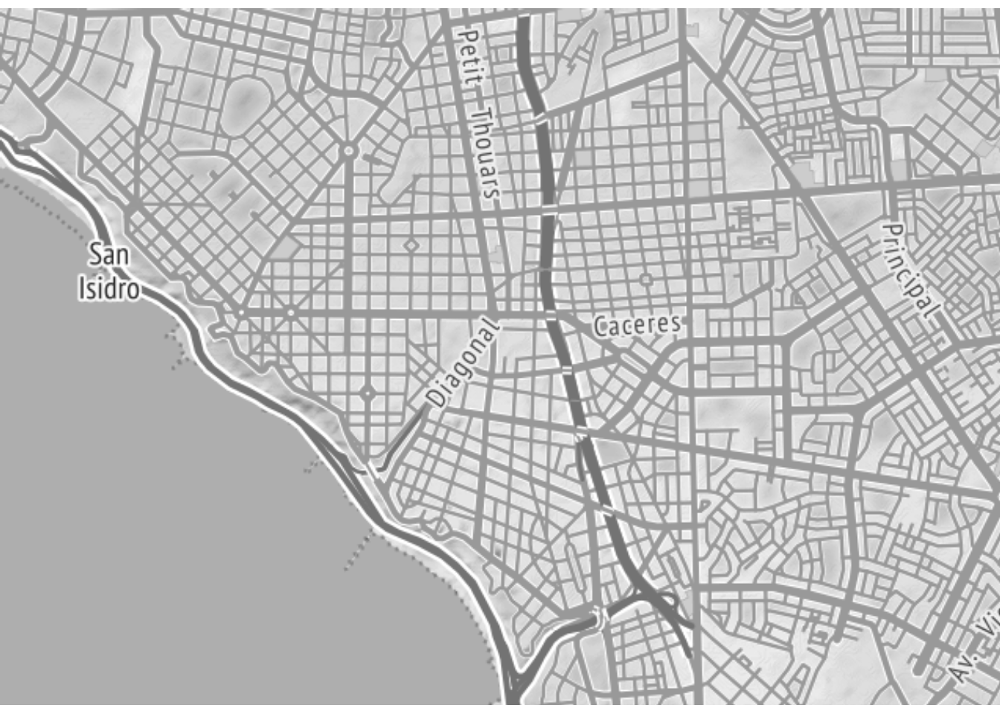
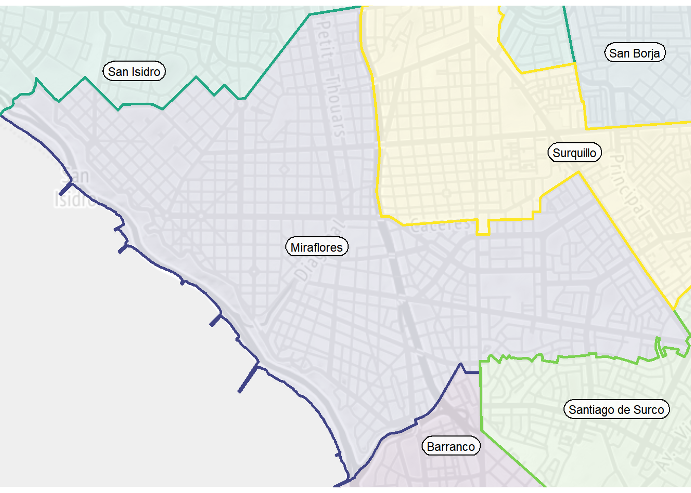
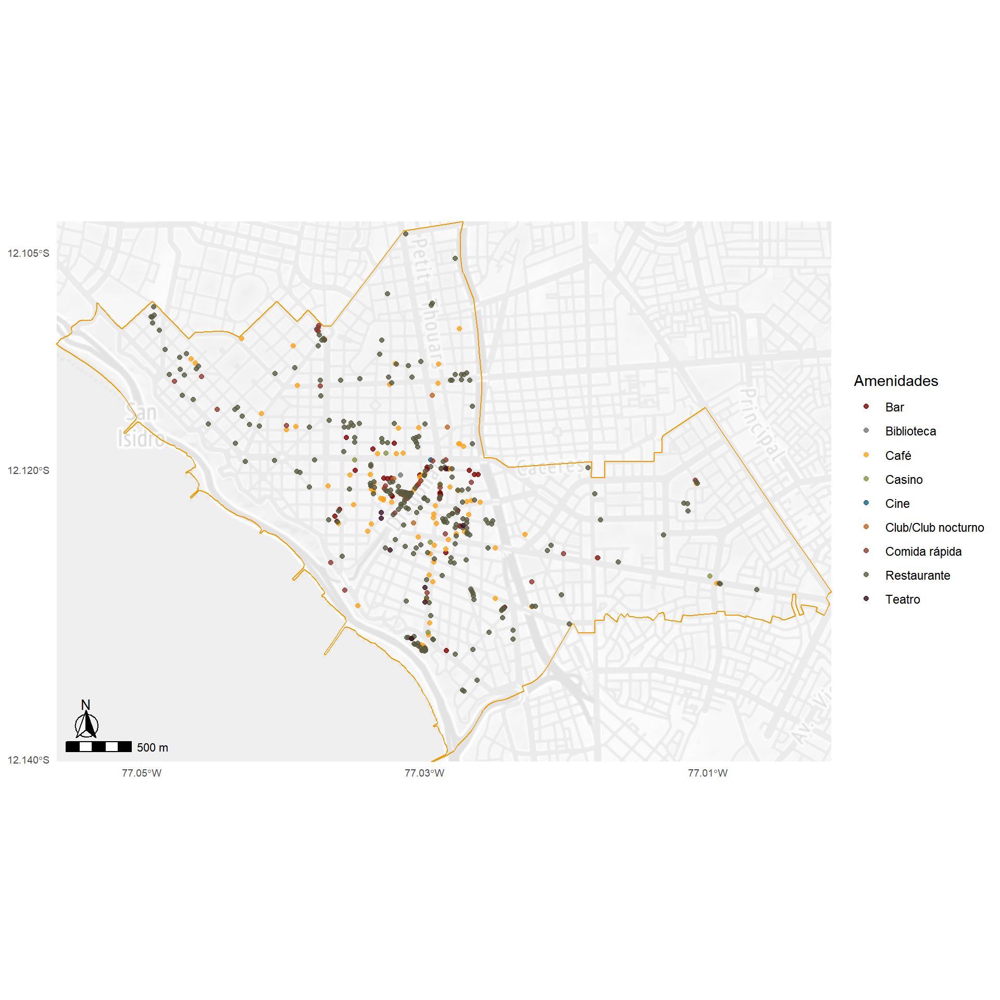

![]()
Código
#importar paquetes necesarios.
pacman::p_load(tidyverse, janitor, haven, rio, sjlabelled, flextable, knitr, kableExtra, DT, gtsummary, gt, osmdata, sf, ggmap, leaflet, ggspatial, paletteer)El objetivo de este post es explorar distintas herramientas en R para elaborar mapas.
22 de mayo de 2022
En el rubro de elaboración de mapas, existen geo-softwares que se especializan en la construcción de mapas estéticamente agradables y geográficamente rigurosos como es el caso de ArcGis, QGis, Google Earth, Open Street Maps, entre otros. No obstante, en la actualidad, R se posiciona como una opción cada vez más atractiva dado que combina gran parte de las herramientas de las aplicaciones mencionadas junto con el command line interface (CLI) que permite llevar un registro de las funciones aplicadas para llegar a un determinado resultado.
Es así como me centraré en explorar las herramientas más recientes en R para elaborar mapas y, para probar la utilidad de estas funciones, las aplicaré a un caso práctico: lugares de esparcimiento público en el distrito de Miraflores (Lima, Perú) como restaurantes, bares, cafés, clubes, entre otros.
Los geo-softwares trabajan principalmente con archivos .shp o shapefiles que incluye información sobre la forma del mapa y sus elementos. Por lo que si quisiéramos visualizar el mapa de Miraflores como un polígono tendríamos que dirigirnos a una galería de mapas en el formato deseado. Una página muy utilizada dado su amplia biblioteca de mapas es GPS Perú la cual cuenta con una galería de los distritos de Lima la cual podemos descargar como un archivo zipeado e importarlo como una base de datos al R. Sin embargo, resulta más conveniente apoyarse en la base de datos de Open Street Maps la cual se encuentra constantemente en actualización y además nos ahorra el proceso de tener de descargar un zip y abrirlo. Para ello, nos apoyaremos principalmente en los paquetes {osmdata} y {sf}.
En primer lugar, nos encargaremos de importar el mapa que irá en la base de nuestros polígonos. Este mapa tiene el siguiente aspecto:

Como podemos observar en la Figura 1, hemos importado un mapa base de las vías principales del Distrito de Miraflores en Lima, Perú. Se ha especificado que el mapa se encuentre en escala de grises para que las capas que se posicionen encima de este mapa base tengan mejor visibilidad. Asimismo, la función ggmap() nos permite matizar aún más este mapa para que sea más claro y semitransparente.
En segundo lugar, insertamos los límites distritales de Miraflores y sus distritos vecinos (Barranco, San Borja, San Isidro, Santiago de Surco y Surquillo).
mira_bordes<-getbb("Distrito de Miraflores") %>%
opq() %>%
add_osm_feature(key = 'admin_level', value = '8') %>%
osmdata_sf() %>% #ha importado miraflores y sus alrededores.
.$osm_multipolygons #alternativa para subsetear un objeto dentro de una lista , tan facil que da miedo.
ggmap(mira_map, darken = c(0.8, "white")) +
#utilizando coordinate reference system (CRS) to 4326. The bounding box of the ggmap object is in WGS84 (EPSG:4326), but the actual raster is in EPSG:3857. You have to hack the bounding box of the ggmap object to be in the same CRS as the underlying data.
geom_sf(data= mira_bordes, aes(fill=name, color=name), inherit.aes = FALSE, show.legend = FALSE, alpha = 0.1, size=1) + #bruh inherit aes es lo mejor
viridis::scale_fill_viridis(discrete = TRUE) +
viridis::scale_color_viridis(discrete = TRUE) +
geom_sf_label(
data=mira_bordes, aes(label=name),
#"Barranco","Miraflores","San Borja","San Isidro",
#"Santiago de Surco","Surquillo"
nudge_x = c(
0, #B
-0.005, #M
-0.01, #SB
-0.01, #SI
-0.025, #SS
0), #S
nudge_y = c(
0.007, #B
0, #M
-0.01, #SB
-0.01, #SI
-0.009, #SS
0), #S
inherit.aes = FALSE,
size = 3,
alpha = 0.8,
label.r = unit(0.5, "lines"),
label.size = 0.5) +
coord_sf(crs = st_crs(4326)) + #para que se alineen las capas en el mismo CRS
theme_void()
En tercer lugar, nos quedamos únicamente con el distrito de Miraflores e importamos los lugares de interés considerando el tipo de lugar en la leyenda del mapa.
mira_lugares <- getbb("Distrito de Miraflores") %>%
opq() %>%
add_osm_feature(
key = "amenity"
,
value = c(
"bar",
"casino" ,
"cinema",
"fast_food" ,
"food_court",
"cafe" ,
"gambling" ,
"nightclub",
"theatre",
"ice_cream",
"social_centre",
"restaurant",
"library",
"internet_cafe",
"gym"
)
) %>%
osmdata_sf()
mira_lugares2<-
mira_lugares$osm_points %>%
filter(!is.na(name))
st_crs(mira_lugares2) <- st_crs(mira_bordes)
mira_lugares3<-
st_join(mira_lugares2, mira_bordes %>% filter(name %in% "Miraflores"), join = st_within) %>%
filter(!is.na(name.y))
mira_lugares4<-
mira_lugares3 %>%
mutate(amenity=case_when(
amenity %in% "bar" ~ "Bar",
amenity %in% c("cafe", "internet_cafe") ~ "Café",
amenity %in% "casino" ~ "Casino",
amenity %in% "cinema" ~ "Cine",
amenity %in% c("fast_food", "food_court", "ice_cream") ~ "Comida rápida",
amenity %in% "bar" ~ "Bar",
amenity %in% "library" ~ "Biblioteca",
amenity %in% c("nightclub", "social_centre") ~ "Club/Club nocturno",
amenity %in% "restaurant" ~ "Restaurante",
amenity %in% "theatre" ~ "Teatro"
))
ggmap(mira_map, darken = c(0.8, "white")) +
geom_sf(data= mira_bordes %>% filter(name %in% "Miraflores"), color = "orange2", inherit.aes = FALSE, show.legend = FALSE, alpha = 0.1, size=0.5) +
geom_sf(data= mira_lugares4, aes(color=amenity), inherit.aes = FALSE, size = 1.5, alpha=0.8) +
scale_color_paletteer_d(`"ggsci::default_uchicago"`) +
coord_sf(crs = st_crs(4326), expand = FALSE) + #era expand false el grid
annotation_scale(location = "bl", width_hint = 0.1) +
annotation_north_arrow(location = "bl", which_north = "true",
pad_x = unit(0.1, "in"), pad_y = unit(0.2, "in"),
height = unit(1, "cm"), width = unit(1, "cm"),
style = north_arrow_fancy_orienteering) +
scale_x_continuous(breaks = c(-77.05, -77.03, -77.01)) +
scale_y_continuous(breaks = c(-12.14, -12.12, -12.105)) +
theme_minimal() +
theme(
axis.title = element_blank(),
axis.text = element_text(size = 7)
) +
guides(color=guide_legend("Amenidades"))
Como podemos observar en la Figura 3, entre los lugares más comunes se encuentran los restaurantes, los cafés y la comida rápida. No obstante, también encontramos variedad en el rubro de teatros contando con 8 lugares.
@online{sotelo2022,
author = {Santiago Sotelo},
title = {Exploración de mapas en R},
date = {2022-05-22},
langid = {es}
}
---
title: "Exploración de mapas en R"
subtitle: |
El objetivo de este post es explorar distintas herramientas en R para elaborar mapas.
date: "2022-05-22"
categories: [mapas]
image: "image.jpg"
fig-cap-location: top
execute:
echo: true
cache: true
format:
html:
code-fold: true
---
En el rubro de elaboración de mapas, existen geo-*softwares* que se especializan en la construcción de mapas estéticamente agradables y geográficamente rigurosos como es el caso de ArcGis, QGis, Google Earth, Open Street Maps, entre otros. No obstante, en la actualidad, R se posiciona como una opción cada vez más atractiva dado que combina gran parte de las herramientas de las aplicaciones mencionadas junto con el *command line interface (CLI)* que permite llevar un registro de las funciones aplicadas para llegar a un determinado resultado.
Es así como me centraré en explorar las herramientas más recientes en R para elaborar mapas y, para probar la utilidad de estas funciones, las aplicaré a un caso práctico: lugares de esparcimiento público en el [distrito de Miraflores](https://es.wikipedia.org/wiki/Distrito_de_Miraflores_(Lima)) (Lima, Perú) como restaurantes, bares, cafés, clubes, entre otros.
# El mapa
Los *geo-softwares* trabajan principalmente con archivos `.shp` o shapefiles que incluye información sobre la forma del mapa y sus elementos. Por lo que si quisiéramos visualizar el mapa de Miraflores como un polígono tendríamos que dirigirnos a una galería de mapas en el formato deseado. Una página muy utilizada dado su amplia biblioteca de mapas es [GPS Perú](https://www.geogpsperu.com/) la cual cuenta con una galería de los distritos de Lima la cual podemos descargar como un archivo zipeado e importarlo como una base de datos al R. Sin embargo, resulta más conveniente apoyarse en la base de datos de *Open Street Maps* la cual se encuentra constantemente en actualización y además nos ahorra el proceso de tener de descargar un zip y abrirlo. Para ello, nos apoyaremos principalmente en los paquetes `{osmdata}` y `{sf}`.
```{r}
#| code-fold: show
#importar paquetes necesarios.
pacman::p_load(tidyverse, janitor, haven, rio, sjlabelled, flextable, knitr, kableExtra, DT, gtsummary, gt, osmdata, sf, ggmap, leaflet, ggspatial, paletteer)
```
En primer lugar, nos encargaremos de importar el mapa que irá en la base de nuestros polígonos. Este mapa tiene el siguiente aspecto:
```{r mapa base}
#| label: fig-mapa_base
#| fig-cap: Mapa de las vías principales del Distrito de Miraflores (Lima, Perú)
mira_map<-get_map(
getbb("Distrito de Miraflores"),
source = "stamen",
maptype = "toner-lite",
color = c("bw"),
force = TRUE #importante cuando quieres volver a llamar un mismo mapa.
)
ggmap(mira_map) +
theme_void()
```
Como podemos observar en la @fig-mapa_base, hemos importado un mapa base de las vías principales del Distrito de Miraflores en Lima, Perú. Se ha especificado que el mapa se encuentre en escala de grises para que las capas que se posicionen encima de este mapa base tengan mejor visibilidad. Asimismo, la función `ggmap()` nos permite matizar aún más este mapa para que sea más claro y semitransparente.
En segundo lugar, insertamos los límites distritales de Miraflores y sus distritos vecinos (Barranco, San Borja, San Isidro, Santiago de Surco y Surquillo).
```{r mapa limites}
#| label: fig-mapa_bordes
#| fig-cap: Mapa de Miraflores y sus distritos vecinos
mira_bordes<-getbb("Distrito de Miraflores") %>%
opq() %>%
add_osm_feature(key = 'admin_level', value = '8') %>%
osmdata_sf() %>% #ha importado miraflores y sus alrededores.
.$osm_multipolygons #alternativa para subsetear un objeto dentro de una lista , tan facil que da miedo.
ggmap(mira_map, darken = c(0.8, "white")) +
#utilizando coordinate reference system (CRS) to 4326. The bounding box of the ggmap object is in WGS84 (EPSG:4326), but the actual raster is in EPSG:3857. You have to hack the bounding box of the ggmap object to be in the same CRS as the underlying data.
geom_sf(data= mira_bordes, aes(fill=name, color=name), inherit.aes = FALSE, show.legend = FALSE, alpha = 0.1, size=1) + #bruh inherit aes es lo mejor
viridis::scale_fill_viridis(discrete = TRUE) +
viridis::scale_color_viridis(discrete = TRUE) +
geom_sf_label(
data=mira_bordes, aes(label=name),
#"Barranco","Miraflores","San Borja","San Isidro",
#"Santiago de Surco","Surquillo"
nudge_x = c(
0, #B
-0.005, #M
-0.01, #SB
-0.01, #SI
-0.025, #SS
0), #S
nudge_y = c(
0.007, #B
0, #M
-0.01, #SB
-0.01, #SI
-0.009, #SS
0), #S
inherit.aes = FALSE,
size = 3,
alpha = 0.8,
label.r = unit(0.5, "lines"),
label.size = 0.5) +
coord_sf(crs = st_crs(4326)) + #para que se alineen las capas en el mismo CRS
theme_void()
```
En tercer lugar, nos quedamos únicamente con el distrito de Miraflores e importamos los lugares de interés considerando el tipo de lugar en la leyenda del mapa.
```{r mapa limites}
#| label: fig-mapa_lugares
#| fig-cap: Lugares de esparcimiento público en Miraflores
#| column: screen-inset
#| fig-height: 10
#| fig-width: 10
mira_lugares <- getbb("Distrito de Miraflores") %>%
opq() %>%
add_osm_feature(
key = "amenity"
,
value = c(
"bar",
"casino" ,
"cinema",
"fast_food" ,
"food_court",
"cafe" ,
"gambling" ,
"nightclub",
"theatre",
"ice_cream",
"social_centre",
"restaurant",
"library",
"internet_cafe",
"gym"
)
) %>%
osmdata_sf()
mira_lugares2<-
mira_lugares$osm_points %>%
filter(!is.na(name))
st_crs(mira_lugares2) <- st_crs(mira_bordes)
mira_lugares3<-
st_join(mira_lugares2, mira_bordes %>% filter(name %in% "Miraflores"), join = st_within) %>%
filter(!is.na(name.y))
mira_lugares4<-
mira_lugares3 %>%
mutate(amenity=case_when(
amenity %in% "bar" ~ "Bar",
amenity %in% c("cafe", "internet_cafe") ~ "Café",
amenity %in% "casino" ~ "Casino",
amenity %in% "cinema" ~ "Cine",
amenity %in% c("fast_food", "food_court", "ice_cream") ~ "Comida rápida",
amenity %in% "bar" ~ "Bar",
amenity %in% "library" ~ "Biblioteca",
amenity %in% c("nightclub", "social_centre") ~ "Club/Club nocturno",
amenity %in% "restaurant" ~ "Restaurante",
amenity %in% "theatre" ~ "Teatro"
))
ggmap(mira_map, darken = c(0.8, "white")) +
geom_sf(data= mira_bordes %>% filter(name %in% "Miraflores"), color = "orange2", inherit.aes = FALSE, show.legend = FALSE, alpha = 0.1, size=0.5) +
geom_sf(data= mira_lugares4, aes(color=amenity), inherit.aes = FALSE, size = 1.5, alpha=0.8) +
scale_color_paletteer_d(`"ggsci::default_uchicago"`) +
coord_sf(crs = st_crs(4326), expand = FALSE) + #era expand false el grid
annotation_scale(location = "bl", width_hint = 0.1) +
annotation_north_arrow(location = "bl", which_north = "true",
pad_x = unit(0.1, "in"), pad_y = unit(0.2, "in"),
height = unit(1, "cm"), width = unit(1, "cm"),
style = north_arrow_fancy_orienteering) +
scale_x_continuous(breaks = c(-77.05, -77.03, -77.01)) +
scale_y_continuous(breaks = c(-12.14, -12.12, -12.105)) +
theme_minimal() +
theme(
axis.title = element_blank(),
axis.text = element_text(size = 7)
) +
guides(color=guide_legend("Amenidades"))
```
# Conclusión
Como podemos observar en la @fig-mapa_lugares, entre los lugares más comunes se encuentran los restaurantes, los cafés y la comida rápida. No obstante, también encontramos variedad en el rubro de teatros contando con 8 lugares.
```{r notas, eval=FALSE, include = FALSE}
plot(st_transform(mira_bordes$osm_multipolygons, crs = 3857)[1], bgMap = mira_map)
ggplot() +
geom_sf(data= mira_bordes$osm_multipolygons)
getbb("Lima, Perú") %>%
opq() %>%
add_osm_feature(key = 'admin_level', value = '8') %>%
#add_osm_feature(key = "boundary", value = "administrative") %>%
osmdata_sf() %>%
st_geometry() %>%
plot()
ggplot() +
geom_sf(data= lima$osm_polygons)
leaflet(lima) %>%
addTiles() %>%
addPolygons()
#importar datos mapa base
mira_map <-
get_map(getbb("Miraflores, Lima")) %>%
ggmap()
ob1<-
getbb("Distrito de Miraflores") %>%
opq() %>%
add_osm_feature(key = 'admin_level', value = '8') %>%
#add_osm_feature(key = "boundary", value = "administrative") %>%
osmdata_sf()
ggplot() +
geom_sf(data= ob1$osm_polygons)
mad_map <- get_map(getbb("Lima"), zoom = 15, maptype = "roadmap",source="osm",color="bw")
ggmap(mad_map)
```